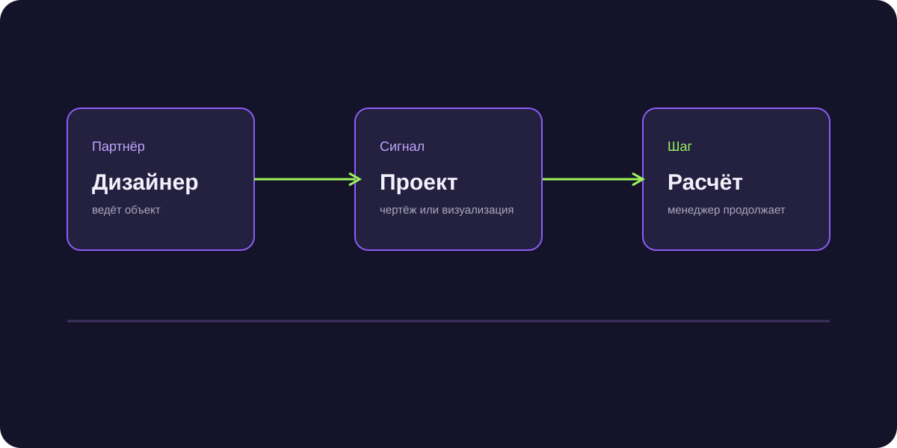

Партнёрский маркетинг: как бизнес получает клиентов через партнёров
Партнёрский маркетинг помогает получать клиентов через людей и компании, которые уже имеют доверие нужной аудитории. Канал работает, когда партнёру понятно, что рекомендовать и что он получает взамен.

Короткий ответ
Нужно выбрать партнёров с подходящим контекстом, предложить понятную ценность, упростить передачу контакта и связать рекомендацию с результатом.
Кого считать партнёром
Партнёр уже общается с вашей целевой аудиторией или влияет на выбор подрядчика. Это может быть агент, дизайнер, интегратор, консультант или компания со смежным продуктом.
Как сделать оффер
Объясните, какую задачу партнёр закрывает для своего клиента, где проходит его ответственность и как фиксируется вознаграждение. Общая фраза «давайте сотрудничать» не запускает канал.
Как измерять
Считайте переданные контакты, квалификацию, встречи, сделки и повторные рекомендации. Один активный партнёр может быть ценнее большой разовой кампании.